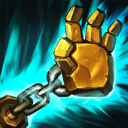
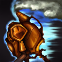

起手裝備
 遺跡之盾
遺跡之盾
約德爾陷阱先把鉤中轉成團隊收益，錫柯配R，第三件用2500金日輪補雙防與群盾；冰心留給普攻威脅。好戰改為達門檻後的可選續戰線。 五成裝為四件購買裝＋進化任務裝，鞋獨立；三級鞋按經濟補，不把外站附魔搬進本站。


五件成裝與鞋子分開列示；起手與核心是購買路線，不是額外佔用的成裝欄位。鞋子完成時機仍依對線壓力與回城金錢調整。


冰霜霸主、巨像勇氣由鉤子與擊飛觸發，回春適合承受消耗，海克斯閃現保留視野死角抓人。


保留閃現＋點燃配合控制集火；若改保排可在選角以虛弱替點燃，不在對局中換技能。
加點優先：Q > E > W
Q > E > W；主鉤副擊飛，不為W追擊犧牲關鍵控制循環。
生命值降低至危險範圍時，布里茨會依自身魔力獲得護盾。被動進入冷卻前可承受一輪爆發，但不能把護盾當作固定坦度。

發射機械手，抓住第一個命中的敵人並拉到身前。士兵會阻擋技能，因此草叢、側面與牆角是主要出鉤角度。

獲得逐漸衰減的跑速，可再次施放取得更強加速；結束後會自我緩速，再次施放後的緩速更重。此技能不提供攻速。
強化下一次普攻，造成額外傷害並擊飛目標。近距離可先擊飛再抓取，或在拉回後接續控制。
大絕可用時，普攻標記敵人並延遲造成魔法傷害；主動施放對附近敵人造成魔法傷害並短暫沉默。手機版此技能不提供電腦版的直接移除護盾效果。
W只提供遞減移速且可再加速，結束有自我緩速；R是傷害與沉默，刪除混入電腦版的破盾宣稱。
1技抓取 → 普攻接觸目標 → 3技擊飛 → 4技沉默限制反擊 → 點燃壓低回復
拉回後先接擊飛，避免目標立即位移；大絕可在敵方準備護盾或反打時施放，不必固定瞬間全交。
2技加速靠近 → 3技先手擊飛 → 1技近距離抓取 → 4技沉默 → 普攻追擊
對手被逼到牆邊或沒有位移時，先擊飛再出鉤比遠距離盲抓穩定。注意二技結束後的自我減速。
閃現貼近核心 → 3技立即擊飛 → 1技把目標拉回 → 4技沉默限制反擊 → 點燃收尾
閃現擊飛沒有鉤子飛行時間，適合抓有位移的後排。確定隊友能跟上且自己不會被反包圍再使用。
火箭抓取還在手上時，敵方必須持續繞兵與保留位移。不要為低機率角度浪費技能，先利用走位逼出失誤。
靠近目標後以充能一擊先手，再接火箭抓取幾乎不給反應空間，特別適合草叢埋伏與閃現強開。
鉤中後可先R沉默再E擊飛，限制位移反應；大絕沒有直接移除敵方護盾效果。
一級火箭抓取的存在本身就能逼迫敵方走位，不必每次冷卻完成都出鉤。先佔草叢、繞開士兵或用走位把對手逼向牆邊，再抓關鍵目標；近距離時可先用充能一擊擊飛，再接火箭抓取提高命中率。過載運轉可二次加速，但結束後會自我減速，再次施放後更重，追擊前先確認能否完成控制鏈。
約德爾陷阱 → 錫柯的聚合之力 → 日輪的加冕 → 冰霜之心。約德爾陷阱先把鉤中轉成團隊收益，錫柯配R，第三件用2500金日輪補雙防與群盾；冰心留給普攻威脅。好戰改為達門檻後的可選續戰線。 群山堡壘由起手任務裝進化，保留占位；二級鞋依對線補，三級鞋不延後必要功能裝。
不要為了找鉤站進無視野區，先和隊友排除草叢再施壓。團戰可抓走位失誤的後排，也可留鉤與擊飛保護己方主力。火箭抓取命中後立刻判斷拉來的是可秒殺目標、坦克還是反開角色；若拉錯人可能直接替對手完成開戰。
三名坦輔都可能樂於被拉到主力旁邊，鉤前確認能否集火；達瑞文、剎雅、崔絲塔娜可接近距離爆發。
對局名單是機制與分路判斷，不代表固定勝率；需同時看雙方熟練度、兵線與陣容。
三名坦輔都可能樂於被拉到主力旁邊，鉤前確認能否集火；達瑞文、剎雅、崔絲塔娜可接近距離爆發。
威脅名單是攻略與技能互動，實際需看雙方射手、技能冷卻和兵線；不代表台服勝率排名。
完整成裝為四件購買裝＋一件進化任務裝；鞋獨立。以下以本頁預設為基準，變體需重新檢查同名裝及功能缺口。
依陣容
觸發：敵方暴擊普攻成為主傷害時。
冰霜之心 → 蘭頓之兆
敵方暴擊普攻成為主傷害時。
蘭頓針對暴擊；若是高頻非暴擊普攻，可選冰霜之心替代同一格。
換掉原功能前先確認隊友能補足；替換不是第六件成裝。
依陣容
觸發：敵方法傷持續壓低血量、妨礙第二輪控制。
冰霜之心 → 自然之力
敵方法傷持續壓低血量、妨礙第二輪控制。
自然之力補持續魔防；魔法威脅優先時可前移購買順序。
換掉原功能前先確認隊友能補足；替換不是第六件成裝。
依陣容
觸發：敵方治療或吸血使集火失敗。
冰霜之心 → 荊棘之甲
敵方治療或吸血使集火失敗。
荊棘7.3b總價2850，先按需買刺藤胸甲，確認自身能觸發重創；不要無條件先合。
換掉原功能前先確認隊友能補足；替換不是第六件成裝。
依陣容
觸發：敵方範圍爆發要在短時間內接住。
預設已包含日輪的加冕，保留並依威脅提前，不再買第二件。
換掉原功能前先確認隊友能補足；替換不是第六件成裝。
依陣容
觸發：主要威脅靠持續高頻普攻且可接近其作用範圍。
預設已包含冰霜之心，保留並依威脅提前，不再買第二件。
換掉原功能前先確認隊友能補足；替換不是第六件成裝。
依對線
觸發：可被韌性縮短的控制或主要魔法威脅。
鍍板鋼蓋 → 水星之靴
整條鞋線一起替換；先二級鞋，三級視經濟補。
不買第二雙鞋；主動裝仍占裝備格，不搬外站附魔。
裝甲戰靴 → 鎖鏈軍靴
整條鞋線一起替換；先二級鞋，三級視經濟補。
不買第二雙鞋；主動裝仍占裝備格，不搬外站附魔。
韌性不能縮短擊飛等所有控制。
對局反覆消耗且能脫離傷害；前三件與已進化群山堡壘完成後才啟動。
陷阱200＋錫柯300＋好戰700＋群山175＝1375額外生命，超過1250；冰心沒有生命。任務裝未進化或改裝時重新核算。
7.3d差異核對：本頁核對官方英雄／裝備差異與現行配置參照；未列的技能不表示已完成逐級實測。查看校正範圍。
本頁校正版本：7.3d；校正日期：2026-10-25。
參考來源標示版本：7.3c
本輪核對官方版本差異、道具/符文引用、五成裝與鞋線、逐級加點及情境替換一致性。Tier及玩法屬本站編輯判斷，不是官方排名或台服勝率；未公開的全級技能表不推算。
評級理由：7.3c 維持 A（本站判斷）。維持A：抓單威脅高但鉤錯坦克會反向開戰，不能僅因日輪變便宜升級Tier。 7.3c 未改動此分路的英雄數值，沒有新證據只因版本號而升降。
Riot 官方資料 ↗ · Riot 官方資料 ↗ · Riot 官方資料 ↗ · Riot 官方資料 ↗ · Riot 官方資料 ↗ · WildRiftFire 參考攻略 ↗ · Riot 官方資料 ↗
7.3c 的直接英雄倍率改動屬符文大亂鬥；本召喚峽谷配置承接 7.3b。未把模式專屬增削轉為峽谷增削。
五件成裝、獨立鞋線、起手、核心、情境替換引用與一般符文列別均重新檢查；移除裝備不列入當前推薦。
歷史資料有後續調整時，以較新版本數值為準。
| 項目 | 調整前 | 調整後 |
|---|---|---|
| 基礎生命 | 660 | 630 |
| 基礎物防 | 49 | 45 |
| 每級生命成長 | 120 | 135 |